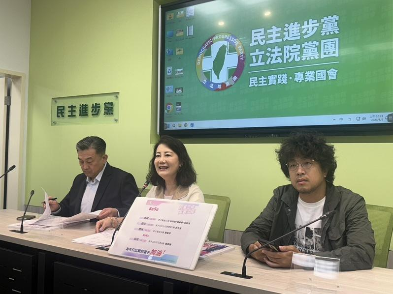

民进党兵分四路针对国会职权修法声请释宪，宪法法庭明(6)日举办言词辩论，战火一触即发，民进党立院党团干事长吴思瑶说，因为四个声请方必须共用辩论时间，要分秒必争，党团将侧重在修法过程中的程序缺失，「我们非常平常心」，呼吁蓝白别「鸡蛋里挑钢筋」质疑作业程序，诋毁宪法法庭公正性。
蓝白联手通过国会职权修法相关条文修正，民进党团、行政院、总统府、监察院在法案生效后，先后声请释宪及暂时处分。宪法法庭7月19日裁定，立法院职权行使法有关「听取国情报告」、「听取报告及质询」、「人事同意权行使」、「调查权行使」、「听证会举行」及刑法「藐视国会罪」暂停适用。
据宪法法庭公告的程序，言词辩论当天上午、下午各一场，上午辩论主题为立法程序、听取总统国情报告、听取报告与质询、人事同意权的行使相关规定部分；下午为调查权行使、听证会举行相关规定部分及刑法藐视国会罪规定。
针对备战情况，吴思瑶今天在党团记者会上说明，党团是以平常心看待，这段时间不断与党籍立委、律师群密集讨论，昨天也积极备战到晚上十点多。相比蓝白，绿营四个声请方必须共用辩论时间，时间很有限，分秒必争，如何做好分工、分配顺序，有效运用简短时间。
吴思瑶指出，针对违宪法案的实质争点，都已做过扎实准备与沙盘推演，民进党团将侧重在修法过程中的程序缺失，「我们非常平常心」，希望大家一起来关心自己国家的宪法，让国会能真正迈向改革，扩权部分则通过言词辩论给社会公评。
民进党立委沈伯洋补充，备战时也要侧重在「对方准备什么」，蓝白在攻防中，聚焦在程序上宪法法庭是否能受理这种案件，有点超脱法案本身是否违宪的实质讨论，之所以会讲分秒必争，除了要讲法案是否有违宪之虞，还要回应对方质疑大法官是否能受理这种案件，这也会花掉满多时间。
针对国民党立委翁晓玲质疑为何暂时处份书状和附件，不用送达给对造？吴思瑶解释，这是最基本的ABC，也是宪法诉讼法的基本理念，宪法法庭没有为难蓝白立委，这是过去一贯的正长做法；另针对为何阅卷调不到法官受理的评议数据，她说，法官的评议是作成判决前的不完整意见，最终要以有拘束力的判决书为主，任何法院都不会提供，不只有宪法法庭这么做。
翁晓玲也质疑，为何书状超过20页网络上就看不到，吴思瑶解释，宪法诉讼书状规则写得很清楚，就是20页，可以学学民进党团浓缩再浓缩，否则就是溢出格式规范。她说，请蓝白不要带风向，引导社会大众质疑宪法法庭对蓝白不公，或违逆过去的程序，但所有要求、对应做法都一致，「鸡蛋里挑钢筋」，诋毁宪法法庭公正性，政治性作为大可不必。